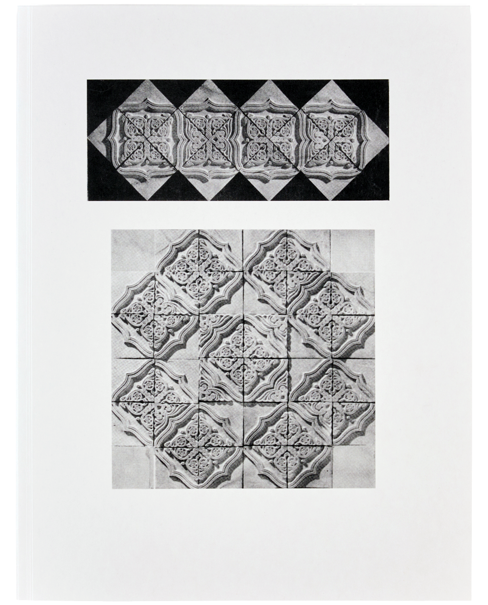
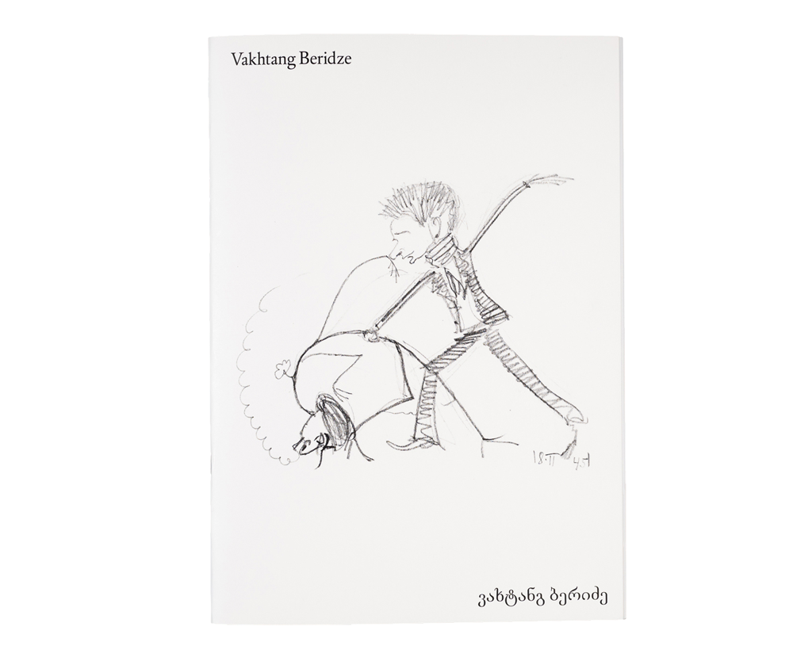
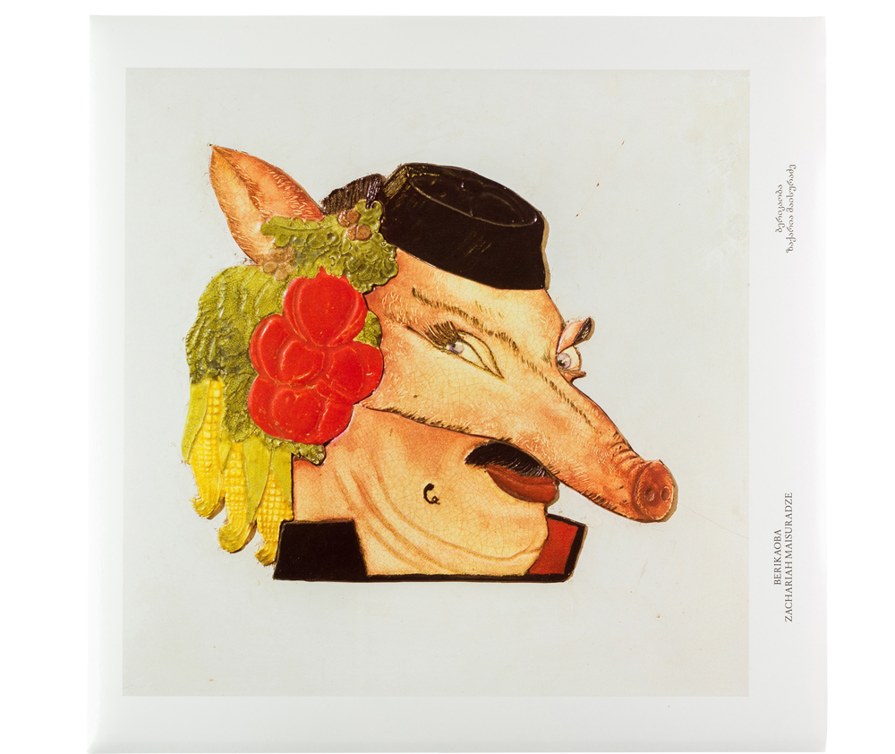
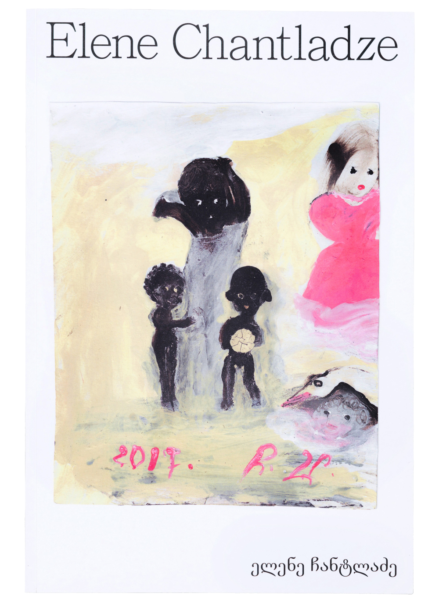
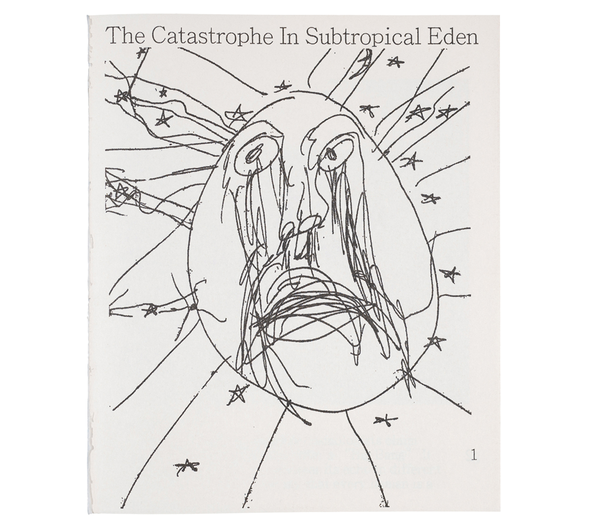
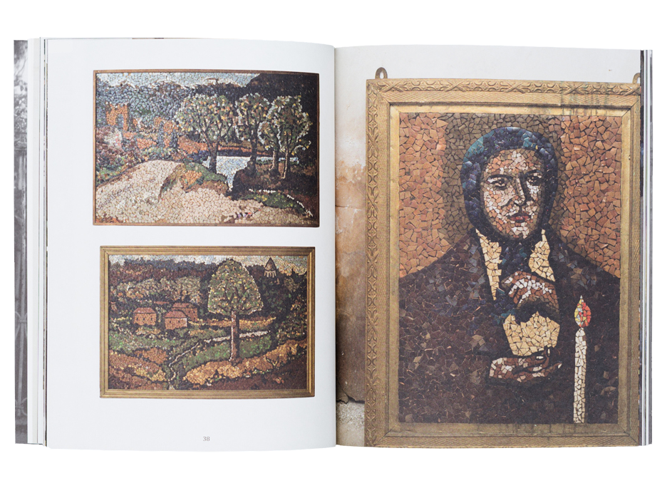
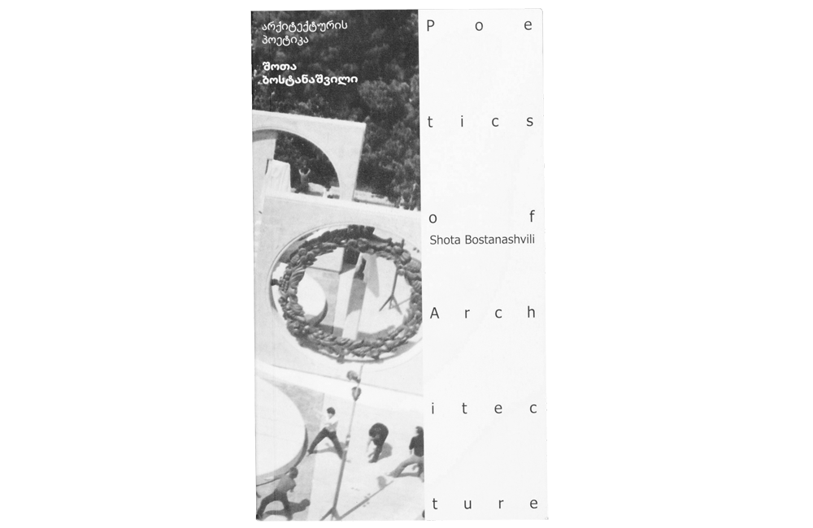
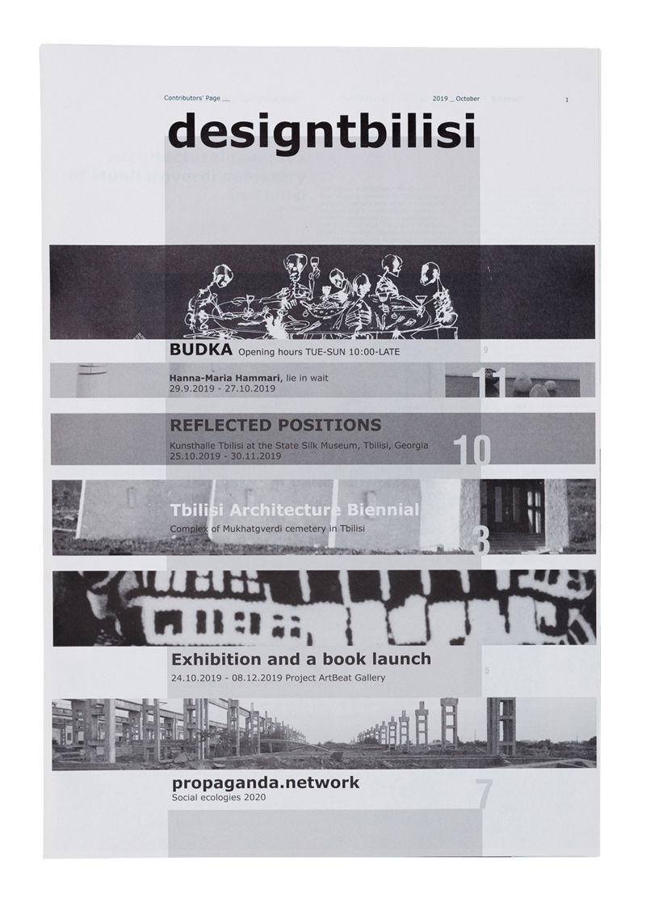
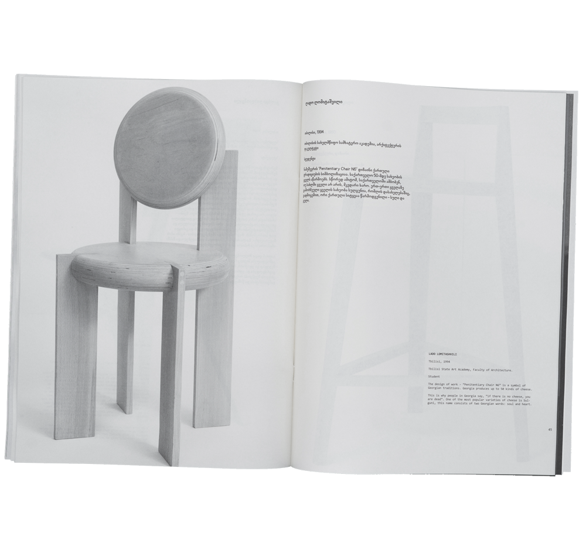
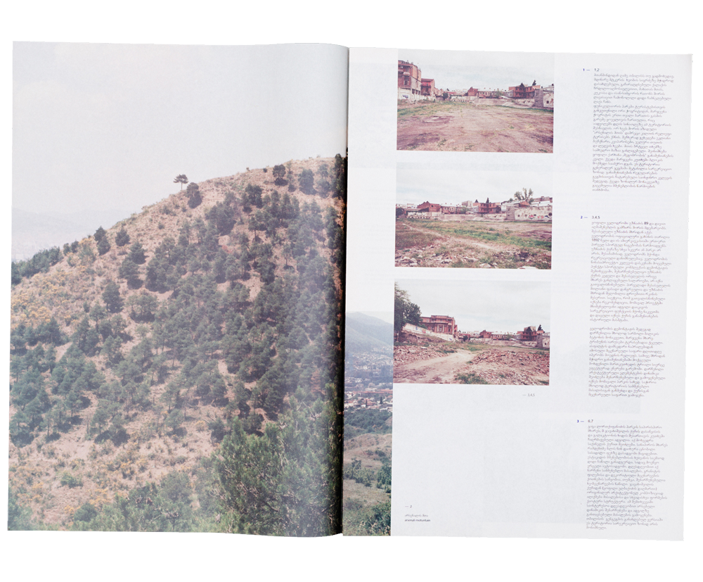

Longinoz Sumbadze Manifold Ornament

From the Chronicles of the Institute, drawings from the years of 1941-42 Vakhtang Beridze

Berikaoba Zacharia Maisuradze

Selected Works Elene Chantladze

The Catastrophe in Subtropical Eden Zura Jishkariani

Gallery in Telavi Elene Lukhutashvili

Poetics of Architecture Shota Bostanashvili

Design Tbilisi Giorgi Tsagareli

Between Cognac and Africa – Chairs
Nectar Gallery

The Parks of Tbilisi
Nectar Gallery
Posta Press is Tbilisi based art book publisher founded in 2015.It is led by a group of artists:
Timur Akhmetov
, Nino Sekhniashvili, Giorgi Tsagareli.
@Contact Us
@Part of Kona Books Store